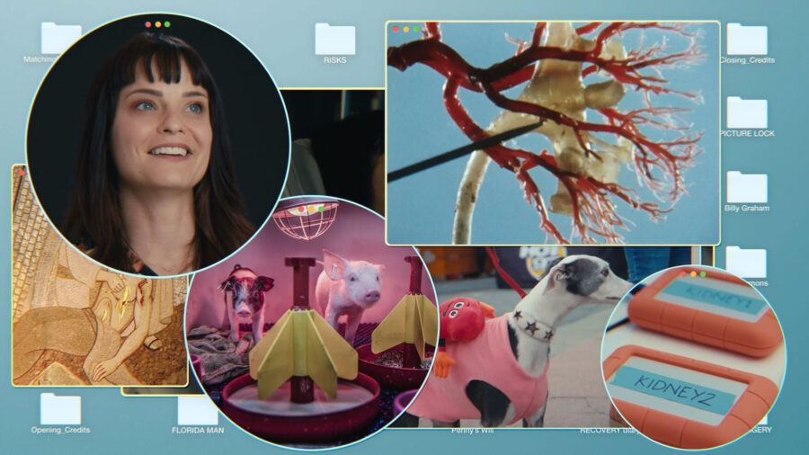

VOICES: Penny Lane
ABOUT THE EVENT
Guggenheim fellow and award-winning filmmaker Penny Lane is known for her experimental feature-length documentaries and short films that capture aspects of human experience to examine our innermost feelings, such as innocence and guilt, suffering and longing, and joy and optimism. For this lecture, Penny discusses how her background in fine art informs her current work as a professional documentary filmmaker, in particular her intensely personal 2023 film Confessions of a Good Samaritan (currently on Netflix), which humorously chronicles her experience of donating a kidney to a stranger.
ACCESS INFORMATION: This program is free and CART captioning will be available. For questions and access accommodations, email gallery400engagement@gmail.com.
ABOUT:
For over ten years, Penny Lane has produced innovative nonfiction films including 8 feature documentaries. They include Happy And You Know It, Confessions Of A Good Samaritan, Listening To Kenny G, Hail Satan?, Nuts! and Our Nixon. Her films have premiered at Sundance, Toronto, Tribeca, SXSW and Rotterdam, and have been financed and/or distributed by partners like HBO, Hulu, Magnolia Pictures, Netflix, Anonymous Content, Fremantle, Impact Partners, Sandbox Films, Concordia and Jigsaw. She has taught film, video and new media art at Colgate University, Bard College, Hampshire College and Williams College. She co-founder of Spinning Nancy production company with Gabriel Sedgwick. They executive produced the hit HBO documentary, Time Bomb Y2K.